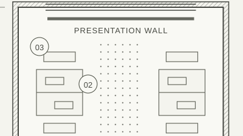
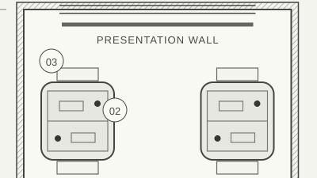
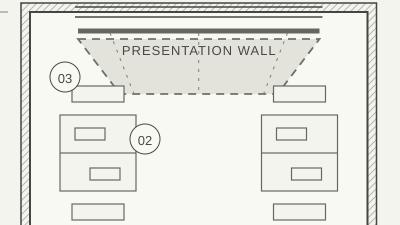

01 / A complete example
Prepare a calmer studio
Open the study explorer in a browser with JavaScript enabled. Start with Reset if you have a saved brief and want the original values. Reset removes the saved brief from this browser.
- Under Choose a study, select 002 — Room to focus.
The title becomes “Room to focus”, the category becomes “Workplace”, and the drawing shows a 10 × 16 m studio with six paired desk zones for twelve people.
- Compare the three Light roles.
Turn Task off to see the desk zones disappear. Turn it on, then compare Ambient and Accent in the same way. The checkboxes work independently. “On” and “Off” text changes beside each control and in the drawing notes. Study changes keep your role settings.

01 / Ambient only The connected route through the studio.

02 / Task only Focused zones at the paired desks.

03 / Accent only A wash toward the presentation wall.
Teaching details from Room to focus / 10 × 16 m. Each isolates one role; these examples do not change your explorer settings.
- Leave Ambient and Task on. Turn Accent off.
The text below the plan should read “Visible: Ambient, Task. Hidden: Accent.” The room, furniture, and dimensional annotations remain visible.
- Fill in your project using the values below.
- Type
- Workplace
- Title
- A calmer studio
- Goal
- Help twelve people work comfortably and present ideas after dark.
- Select Prepare brief.
The prepared summary receives focus and the label becomes “Current”. It repeats your title and goal exactly, identifies your project as Workplace, names “Room to focus · Workplace · 10 × 16 m”, and includes Ambient and Task. Accent is excluded.
Example / after Prepare brief Prepared brief
CurrentThis summary matches your current project, study, and light roles.
A calmer studio
- Your project type
- Workplace
- Your goal
- Help twelve people work comfortably and present ideas after dark.
- Reference study
- Room to focus · Workplace · 10 × 16 m
- Included light roles
- Ambient, Task
Accent is off. Save locally is available for this current result.
- Edit the goal by adding: Keep the entry route easy to read.
The old prepared summary remains readable. Its label becomes “Stale — reprepare”, and Save locally becomes unavailable. A project type, title, study, or role change also makes the summary stale. Returning a field to its old value still requires preparation again.
CurrentStale — reprepareThe previous text remains visible. Prepare again to include your edit.
- Select Prepare brief again.
The summary now includes your full revised goal and the currently selected study and light roles. “Current” appears again and Save locally becomes available.
If either title or goal contains only spaces, preparation stops, shows a field error, and moves focus to the first incomplete field. Your other values stay in place.
02 / Keep the prepared result
Save, then return to it
When the summary is Current, select Save locally. A successful save says “Saved in this browser. Reload to restore this prepared brief.” Reload the same page at the same address: the fields, study, role settings, and prepared summary return. The saved brief is prepared and current.
Only one prepared brief is stored. Saving another current brief replaces it. Unsaved fields and stale summaries are never saved. If you edit after saving, reloading returns the last saved prepared brief, so prepare and save again to keep that change.
A link to a study, such as the Workplace study on the practice page, selects that study. If a different saved brief was restored first, the linked study makes its previous summary stale. Review it and prepare again before saving.
03 / A clean starting point
Reset and recover
Reset clears the prepared result, removes the local saved brief, and restores these original values. Focus returns to Choose a study. Reset takes effect immediately; there is no undo.
| Study | 001 — A quieter table · Hospitality · 8 × 12 m |
|---|---|
| Roles | Ambient, Task, and Accent all on |
| Project type | Hospitality |
| Title and goal | Empty |
| Summary | Not prepared. Save locally unavailable. |
Save locally reports a storage problem
Your prepared brief remains readable for this visit. Copy the title, goal, study, and roles somewhere you control before closing the page. A private browser session or disabled storage may prevent saving. There is no remote copy.
A saved brief cannot be read
The page uses the original values and reports the problem. An invalid or older saved record is not treated as a prepared brief. Reset can remove that local record; prepare and save a fresh brief to replace it.
Reset cannot clear browser storage
The original values are restored for this visit. The page reports that the saved brief may return on reload. You can clear this site's stored data in your browser settings, then reload. Clearing site data removes the local saved brief.
The explorer is missing
Enable JavaScript. Without it, the page shows links to all three full drawings and this guide. The role controls, preparation, and saving require JavaScript.
04 / What the drawing means
A study is a reference for your project
The selected study is Northline’s original illustrative design exploration. Your project is the space you describe in the brief. Its title, type, and goal belong to you. Choosing a Home project while looking at a Workplace study is allowed; both remain clearly named in the summary.
Ambient is shown as a dotted field, Task as solid outlined zones with a small lamp point, and Accent as dashed washes. The numbers 01–03 refer to the matching notes below the plan. Text names each role and its current state, so the comparison does not depend on colour.
Switch off all three roles to see the room geometry alone. A prepared brief in this state explicitly says that no light roles are included. Open full drawing opens a standalone SVG in a new tab with all roles visible; it does not inherit the explorer’s toggles. Use your browser’s zoom there to inspect the original annotations.
These plans suggest where different kinds of light can help. They do not define measured light levels, glare control, power, fixture products, wiring, costs, or code compliance. Those decisions would need the real room, its occupants, and a qualified project review.
05 / What happens locally
Your browser holds the brief
This is a fictional architectural lighting practice and a local planning tool. Preparation creates a summary on this page. Save locally stores that prepared brief on this browser and device; it sends no enquiry, opens no email app, creates no account, and books no commission.
Storage is tied to the page’s browser origin. Changing host, port, browser, or device will usually give you a separate store. Private browsing, direct file access, or browser privacy settings can make persistence unavailable. Closing a private session or clearing site data can delete the brief. Avoid including sensitive information on a shared device.